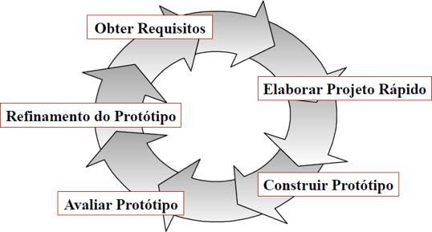

Modelo PrototipaçãoO Modelo Prototipação ao contrário do anterior é constituido de fases que podem ser reversíveis, podendo ser melhor adaptado para projetos no qual o cliente ainda não definiu corretamente todas as etapas necessárias do projeto. Desta forma, é elaborado um protótipo que é uma versão inicial e simples do software, podendo ser usado para demonstrar conceitos, experimentar opções de projeto, descobrir mais sobre o problema e suas possíveis soluções. Ademais, é importânte ressaltar que os protótipos podem ser de qualquer tipo, não sendo necessáriamente serem executáveis, podendo ser apenas visuais para representação do futuro projeto final. Etapas do Modelo Prototipação:

Vantagens e Desvantagens
Como o Modelo Cascata o Modelo Prototipação também tem seus lados positivos e negativos, sendo eles:
Por fim, é importânte ressaltar que a parte mais importânte dos projetos até aqui é definir muito bem todas as regras e requisitos logo no começo, sendo que é importânte um produto final para garantir a qualidade, não sendo apenas um protótipo. Obs: Embora a prototipação possa ser utilizada como um modelo de processo isolado ele é mais comumente utilizada como uma técnica passível de ser utilizada em qualquer um dos modelos de processo. |